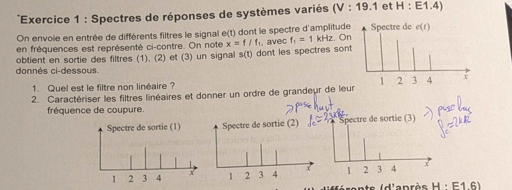
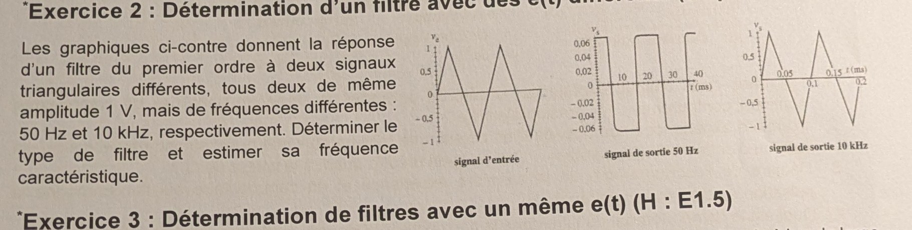
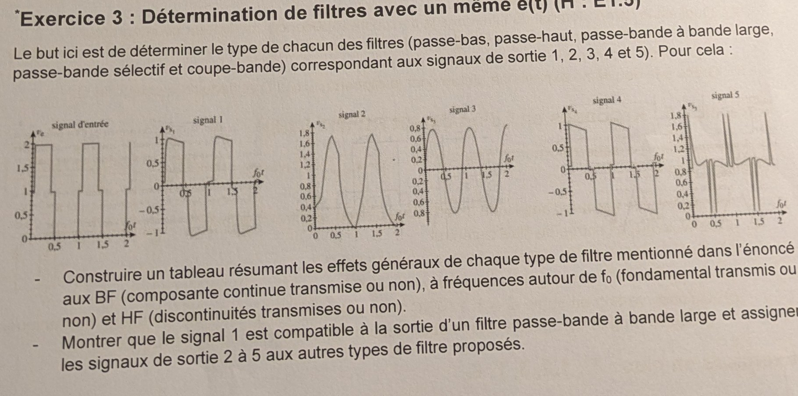
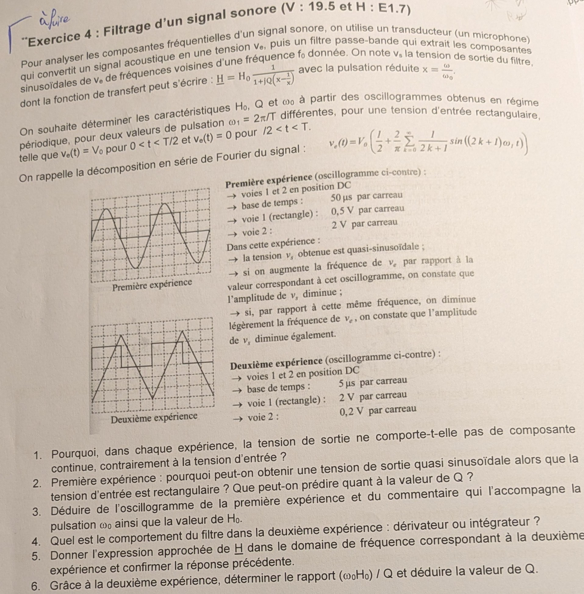
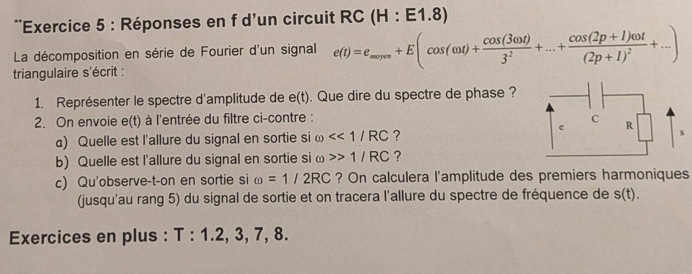

TD2 — filtrage d'un signal périodique, corrigé complet
Les 5 exercices du TD2 corrigés un par un. Pour chacun, l'énoncé (photo) est placé juste au-dessus de sa correction détaillée pas à pas : lecture de spectres, filtre linéaire vs non linéaire, dérivateur/intégrateur, passe-bande résonant (Q, H₀, ω₀) et réponse d'un circuit RC à un signal triangulaire. AM2 · P2030 · Semestre 3 — D. Courtois.

1) Quel est le filtre non linéaire ?
On applique la règle encadrée en tête de TD : un filtre linéaire ne peut sortir que des fréquences présentes en entrée, c.-à-d. uniquement des raies situées aux positions \(x=1,2,3,4\).
- Sortie (2) et sortie (3) : leurs raies tombent exactement sur \(x=1,2,3,4\) (seules les hauteurs changent). ⟹ compatibles avec un filtre linéaire.
- Sortie (1) : les raies ne sont plus alignées sur les entiers \(1,2,3,4\) — de nouvelles fréquences apparaissent (raies décalées / intermédiaires). Or un filtre linéaire ne peut pas créer de fréquence absente de l'entrée.
2) Caractériser les filtres linéaires et estimer leur fréquence de coupure
Il reste les deux filtres linéaires, sorties (2) et (3). On compare, raie par raie, la sortie à l'entrée \(e(t)\) (qui décroît de \(x=1\) à \(x=4\)).
Sortie (2) — le fondamental est écrasé, les harmoniques hauts ressortent
La raie \(x=1\) (basse fréquence) est fortement atténuée tandis que les raies \(x=2,3,4\) restent grandes : les hautes fréquences passent, les basses sont coupées.
Sortie (3) — les raies décroissent vite, les hauts disparaissent
La raie \(x=1\) reste la plus haute et les raies \(x=3,4\) sont fortement atténuées : les basses fréquences passent, les hautes sont coupées.

- À 50 Hz : la sortie est un créneau d'amplitude ≈ 0,06 V (très faible).
- À 10 kHz : la sortie est un triangle d'amplitude ≈ 1 V (≈ l'entrée).
1) Type de filtre
À basse fréquence (50 Hz) la sortie est très atténuée ; à haute fréquence (10 kHz) elle passe sans atténuation (\(s\approx e\)). Le gain croît avec la fréquence : c'est un passe-haut du 1ᵉʳ ordre.
Confirmation par la forme : à basse fréquence la sortie est la dérivée de l'entrée. Or la dérivée d'un triangle (pentes constantes ±) est un créneau — c'est exactement ce qu'on observe à 50 Hz. Un passe-haut du 1ᵉʳ ordre se comporte en dérivateur bien en dessous de sa coupure : \(s = \tau\,\dfrac{de}{dt}\) avec \(\tau=RC\).
2) Estimation de la fréquence caractéristique \(f_c=\dfrac{1}{2\pi RC}\)
En régime dérivateur (50 Hz), l'amplitude du créneau de sortie vaut \(RC\times\) la pente du triangle. Le triangle d'amplitude crête \(V_m=1\text{ V}\) balaie \(2V_m=2\text{ V}\) en une demi-période \(T/2\), d'où une pente
\[ \left|\frac{de}{dt}\right| = \frac{2V_m}{T/2}=4V_m f = 4\times 1\times 50 = 200\ \text{V/s}. \]L'amplitude du créneau observé étant \(S\approx 0{,}06\text{ V}\) :
\[ S = RC\left|\frac{de}{dt}\right| \;\Rightarrow\; RC=\frac{0{,}06}{200}=3\times10^{-4}\ \text{s} \;\Rightarrow\; f_c=\frac{1}{2\pi RC}=\frac{1}{2\pi\cdot 3\times10^{-4}}\approx 5\times10^{2}\ \text{Hz}. \]
1) Tableau des effets généraux de chaque type de filtre
| Type de filtre | BF — composante continue | autour de f₀ — fondamental | HF — discontinuités (fronts) |
|---|---|---|---|
| Passe-bas | transmise ✔ | transmis ✔ | coupées ✘ (fronts arrondis) |
| Passe-haut | coupée ✘ | transmis ✔ | transmises ✔ (fronts raides) |
| Passe-bande bande large | coupée ✘ | transmis ✔ | transmises ✔ (large bande) |
| Passe-bande sélectif | coupée ✘ | transmis ✔ (seul) | coupées ✘ |
| Coupe-bande (réjecteur) | transmise ✔ | coupé ✘ | transmises ✔ |
Lecture : passe-bas = garde le bas (DC + f₀), lisse ; passe-haut = enlève le DC, garde les fronts ; bande large = enlève DC et le tout-haut, garde une large plage ; sélectif = ne garde que f₀ (⟹ sinusoïde) ; coupe-bande = enlève seulement f₀, garde DC et fronts.
2) Signal 1 = passe-bande à bande large, et affectation des signaux 2 à 5
Signal 1 — passe-bande à bande large (à montrer)
Le signal 1 oscille autour de 0 (⟹ pas de composante continue : le DC est coupé) tout en gardant des fronts raides (⟹ HF transmises) et une allure globale de créneau (⟹ fondamental transmis). Le léger affaissement (droop) des plateaux traduit la perte des toutes basses fréquences. DC coupé + fondamental + large bande d'harmoniques ⟹ c'est bien la signature d'un passe-bande à bande large. ✔
Signaux 2 à 5 — par élimination via le tableau
| Signal | Ce qu'on observe | DC | f₀ | HF | ⟹ Filtre |
|---|---|---|---|---|---|
| Signal 2 | bosses arrondies, positives (0,2→1,8), aucun front | ✔ | ✔ | ✘ | Passe-bas |
| Signal 3 | sinusoïde propre centrée sur 0 (±0,8) | ✘ | ✔ seul | ✘ | Passe-bande sélectif |
| Signal 4 | créneau centré sur 0, plateaux qui s'affaissent vers 0 | ✘ | ✔ | ✔ | Passe-haut |
| Signal 5 | ligne de base ≈ 1 (DC gardé) + pics étroits aux fronts | ✔ | ✘ | ✔ | Coupe-bande |

1) Pourquoi la sortie n'a pas de composante continue (contrairement à l'entrée) ?
Le continu correspond à \(\omega=0\), soit \(x=0\). Alors \(x-\dfrac1x\to -\infty\), donc
\[ |\underline H(0)| = \frac{H_0}{\sqrt{1+Q^2\left(x-\frac1x\right)^2}}\xrightarrow[x\to0]{}0. \]2) 1ʳᵉ expérience : sortie quasi sinusoïdale à partir d'un créneau ? Que prédit-on sur Q ?
L'énoncé indique qu'en augmentant ou en diminuant la fréquence de \(v_e\), l'amplitude de \(v_s\) diminue : on est donc au sommet de résonance, soit \(\omega_1=\omega_0\) (le fondamental de l'entrée est calé sur \(\omega_0\)).
Le filtre laisse alors passer le fondamental (gain \(H_0\)) mais atténue fortement le continu (gain 0) et les harmoniques \(3\omega_1,5\omega_1\) (situés à \(x=3,5\), loin de la résonance). Il ne reste, en pratique, que le fondamental ⟹ sortie quasi sinusoïdale.
3) Déduire \(\omega_0\) et \(H_0\) de la 1ʳᵉ expérience
Pulsation \(\omega_0\) (via la période)
Base de temps : 50 µs/carreau. Sur l'oscillogramme, une période de \(v_s\) occupe ≈ 4 carreaux :
\[ T = 4\times 50\ \mu\text{s}=200\ \mu\text{s}\ \Rightarrow\ f_0=\frac1T=5\ \text{kHz} \ \Rightarrow\ \boxed{\ \omega_0=2\pi f_0\approx 3{,}1\times10^{4}\ \text{rad/s}\ } \]Gain de résonance \(H_0\) (via les amplitudes)
À la résonance, \(v_s\) est le fondamental de \(v_e\) multiplié par \(H_0\) :
\[ H_0=\frac{\text{ampl.}(v_s)}{\text{ampl. du fondamental de }v_e}=\frac{S_1}{\,2V_0/\pi\,}. \]Lectures (voie 2 : 2 V/car. ; voie 1 : 0,5 V/car.) : \(S_1\approx 4\text{ V}\) et \(V_0\approx 1\text{ V}\) (fondamental \(2V_0/\pi\approx0{,}64\text{ V}\)), d'où
\[ \boxed{\ H_0\approx \frac{4}{0{,}64}\approx 6\ } \]4) 2ᵉ expérience : dérivateur ou intégrateur ?
Base de temps 5 µs/car. (×10 plus rapide) : la fréquence est ×10, donc \(\omega_1\approx10\,\omega_0\) (\(x\approx10\gg1\)). On est très au-dessus de la résonance, sur la pente descendante. La sortie observée est un triangle. Or l'intégrale d'un créneau (l'entrée) est un triangle.
5) Expression approchée de \(\underline H\) pour \(x\gg1\)
Pour \(x\gg1\), \(x-\dfrac1x\approx x\) et \(Qx\gg1\) :
\[ \underline H \approx \frac{H_0}{jQx}=\frac{H_0}{jQ\,\omega/\omega_0} =\frac{H_0\,\omega_0}{Q}\cdot\frac{1}{j\omega}. \]6) Rapport \(\dfrac{\omega_0 H_0}{Q}\) puis valeur de \(Q\)
Dans la 2ᵉ expérience, à la pulsation du fondamental \(\omega_1\approx10\,\omega_0\) :
\[ |\underline H(\omega_1)|=\frac{H_0\omega_0}{Q\,\omega_1} =\frac{\text{ampl.}(v_s)}{\text{ampl. fond. }v_e} \ \Rightarrow\ \frac{\omega_0 H_0}{Q}=|\underline H(\omega_1)|\times\omega_1. \]Période de \(v_s\) ≈ 4 car. ⟹ \(T_2=4\times5\,\mu\text{s}=20\,\mu\text{s}\), \(f_1=50\text{ kHz}\), \(\omega_1\approx3{,}1\times10^{5}\text{ rad/s}\). Lectures (voie 2 : 0,2 V/car., voie 1 : 2 V/car.) : \(v_s\approx0{,}2\text{ V}\), fondamental de \(v_e = 2V_0/\pi\approx1{,}3\text{ V}\), soit \(|\underline H(\omega_1)|\approx0{,}16\).
\[ \frac{\omega_0 H_0}{Q}\approx 0{,}16\times 3{,}1\times10^{5}\approx 5\times10^{4}\ \text{rad/s}. \]Avec \(\omega_0\approx3{,}1\times10^4\) et \(H_0\approx6\) :
\[ Q=\frac{\omega_0 H_0}{5\times10^{4}}\approx\frac{3{,}1\times10^4\times6}{5\times10^{4}}\approx 4. \]
1) Spectre d'amplitude de \(e(t)\) ; spectre de phase ?
Raies aux harmoniques impairs \(f_0,3f_0,5f_0,\dots\) de hauteurs \(E/n^2\) (\(E,\;E/9,\;E/25,\;E/49\dots\)), plus le continu \(e_{moy}\) à \(f=0\). Décroissance rapide en \(1/n^2\) (typique du triangle).
2Allure de la sortie selon \(\omega\)
Le passe-haut se comporte en dérivateur : \(s\approx RC\,\dfrac{de}{dt}\). La dérivée d'un triangle est un créneau ; de plus le continu \(e_{moy}\) est bloqué.
\(|\underline H|\to1\) et la phase → 0 : le filtre recopie l'entrée, sauf le continu qui reste coupé.
Ici \(RC\omega=\tfrac12\) pour le fondamental. Pour l'harmonique de rang \(n\), \(RC(n\omega)=n/2\), et le gain passe-haut vaut \(|\underline H_n|=\dfrac{n/2}{\sqrt{1+(n/2)^2}}\). L'amplitude de sortie est \(S_n=|\underline H_n|\times \dfrac{E}{n^2}\).
| rang n | RCnω = n/2 | gain |Hₙ| | ampl. entrée | ampl. sortie Sₙ |
|---|---|---|---|---|
| 0 (DC) | 0 | 0 | e_moy | 0 (bloqué) |
| 1 | 0,5 | 0,447 | E | 0,447 E |
| 3 | 1,5 | 0,832 | E/9 | 0,0924 E |
| 5 | 2,5 | 0,928 | E/25 | 0,0371 E |
Détail du fondamental : \(|\underline H_1|=\dfrac{0{,}5}{\sqrt{1+0{,}25}}=0{,}447\), donc \(S_1=0{,}447\,E\). De même \(S_3=0{,}832\cdot E/9=0{,}0924\,E\) et \(S_5=0{,}928\cdot E/25=0{,}0371\,E\).
⎙ Documents sources
Énoncé original photographié (TD2, AEM2/P2030/S3, D. Courtois, 14/09/2026) :
- TD2 — page 1 : Exercices 1 à 3.
- TD2 — page 2 (redressée) : Exercices 4, 5 et « Exercices en plus ».
- Découpes par exercice : dossier
td2-img/.
{kind=link}
{kind=link}
T : 1.2, 3, 7, 8 (exercices d'un autre recueil, non fournis ici — pas d'énoncé à
reproduire).